19. ANOVA ir jos analogai
Šio skyriaus medžiaga vis dar rengiama arba neatnaujinta šių metų kursui, todėl kol kas jos nenagrinėkite.
Užsiėmimo tikslas – susipažinti su statistinių hipotezių tikrinimo būdais dviems ar daugiau imčių taikant dispersinę analizę (ANOVA) ar jai analogiškus statistinius kriterijus.
Atsisiųskite naujausią paketo biostat versiją:
install.packages("devtools")
# Atsisiųskite iš saugyklos „GitHub“:
devtools::install_github("GegznaV/biostat")
devtools::install_github("GegznaV/RcmdrPlugin.biostat", ref = "biostat18")
# Bei iš saugykols „CRAN“:
install.packages("PMCMR")
install.packages("DescTools")Šio darbo metu reikalingi R paketai:
# Manipuliacija su duomenimis
library(tidyverse)
# Analizės ir grafikų braižymo funkcijos
library(Rcmdr)
library(biostat)
library(DescTools)
# Grafikams
library(ggplot2)
# Neparametriniai post-hoc kriterijai
library(PMCMR)19.1 Kas yra ANOVA?
ANOVA yra trumpasis dispersinės analizės (angl. ANalysis Of VAriance) pavadinimas. ANOVA – tai t kriterijaus analogas, kai norima palyginti dviejų ar daugiau nepriklausomų imčių (grupių) vidurkius.
Sakykime, kad lyginame \(k\) grupių. Nulinė analizės hipotezė teigia, kad visų grupių vidurkiai lygūs, o jos alternatyva – bent dviejų grupių (kurių tiksliai – pasakyti negalima) vidurkiai skiriasi:
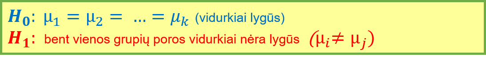
Čia \(i\) ir \(j\) – lyginamų grupių numeriai.
Atlikdami ANOVA pagal dispersijas tikriname, ar skirtumai tarp vidurkių yra statistiškai reikšmingi.
Jei norime patikrinti, ar skirtumai tarp dispersijų yra reikšmingi, naudojame Levene (Livyno) kriterijų.
Praktiškai žiūrint, ši analizė taikoma norint atsakyti į tokius klausimus: ar kelių skirtingų irisų rūšių vidutiniai žiedlapių dydžiai skiriasi, ar kelių gydymo metodų efektyvumas skiriasi, ar ląstelės, auginamos keliose skirtingose terpėse, yra linkusios būti skirtingo dydžio.
Atkreipkite dėmesį, kad yra keli ANOVA variantai. Kai lyginimas atliekamas pagal vieną kategorinį kintamąjį (t. y., pagal vieną faktorių), ANOVA vadinama vienfaktore. Jei pagal du – dvifaktorė ir t.t. Yra ir specialių ANOVA variantų, skirtų priklausomoms imtims, pvz., blokuotųjų duomenų ANOVA, bei neparametrinių variantų, pvz., Kruskal-Wallis kriterijus. Šių pratybų metu mokysimės taikyti tik vienfaktorės ANOVA modelį, skirtą nepriklausomoms duomenų imtims, bei šio modelio analogus, kai pažeidžiamos klasikinio vienfaktorės ANOVA modelio prielaidos.
19.1.1 Kurį vienfaktorės ANOVA variantą ar analogą pasirinkti?
Vienfaktorė ANOVA analizė grindžiama šiomis prielaidomis:
- Grupių duomenys yra nepriklausomi;
- Kiekvienos grupės kintamieji pasiskirstę normaliai (\(X_{gr} \sim \mathcal{N}(\mu_{gr},\sigma^2_{gr})\));
- Grupių dispersijos yra lygios.
Tad prieš atliekant ANOVA, reikia patikrinti duomenims keliamas prielaidas ir pasirinkti tinkamą analizės variantą ar neparametrinį jos analogą (pav. 19.1). Kai duomenų grupės yra nepriklausomos ir jų yra bent 3, įprastai renkamasi tarp klasikinės vienfaktorės ANOVA analizės, Welch F (Velčo F) kriterijaus (dar vadinamo Welch ANOVA), kai pažeidžiama lygių dispersijų prielaida, ir Kruskal-Wallis (Kruskalo-Voliso) kriterijaus, kai smarkiai pažeidžiama normalumo prielaida.
Parametriniai metodai – klasikinė ANOVA ir Walch F kriterijus – lygina duomenų vidurkius (vidurkis yra normaliojo skirstinio parametras), todėl aprašant šios analizės rezultatus reikia nurodyti grupių vidurkius. Tuo tarpu Kruskal-Wallis kriterijaus yra neparametrinis, bendresnis ir lygina, ar duomenų skirstiniai pagal savo padėtį skiriasi, t. y., ar bent viena grupė yra linkusi būti mažesnė arba didesnė už kitas. Aprašant Kruskal-Wallis analizės rezultatus nurodomos visų grupių medianos.
Schema yra supaprastinta ir tik rekomendacinio pobūdžio. Jos tikslas – būti „atspirties tašku“ renkantis analizės metodą. Konkrečiu atveju gali būti išlygų, papildomų sąlygų arba pasirinkimo variantų, kurie schemoje nepažymėti.
Pav. 19.1: Centro padėties lyginimas kelioms imtims. Schema, padedanti išsirinkti reikiamą vienfaktorės nepriklausomų imčių (grupių) ANOVA variantą ar jos analogą. Apatinėje dalyje pateikiami keli galimi post-hoc analizės variantai, skirti grupes lyginti poromis. Skaičiais pažymėtų schemos dalių paaiškinimas pateiktas tekste žemiau.
Skaičiais pažymėtų 19.1 schemos dalių paaiškinimai:
- Jei imčių dydžiai vienodi arba panašūs, ANOVA atspari mažiems ir net vidutiniams normalumo ir lygių dispersijų prielaidų pažeidimams.
- Sprendžiant „iš akies“, dispersijos (ne standartiniai nuokrypiai) neturėtų skirtis daugiau kaip 3 kartus.
- „Vienodos formos“ reiškia, kad visų grupių skirstinių asimetrija (jei yra) – vienos krypties, o sklaida (dispersijos) – daugmaž vienoda.
- Jei visų grupių skirstinių forma vienoda ir skiriasi tik poslinkio parametru, t. y., skiriasi skirstinio padėtis (tokiems duomenims ir rekomenduojamas Kruskal-Wallis kriterijus), tada galime daryti išvadas apie grupių medianas. Šiuo atveju analizės rezultatai informatyvesni nei 5 punkto atveju.
- Jei lyginamų grupių skirstinių forma skirtinga (skiriasi dispersijos, būdinga skirtingos krypties asimetrija), išvadas darome tik apie tai, kad bent viena grupė yra linkusi būti kitokia (arba didesnė, arba mažesnė) nei kitos. Techniškai kalbant, išvadas darome tik apie vidutinius rangus, bet ne medianas. Todėl šie rezultatai mažiau informatyvūs nei 4 punkto atveju.
- Apie galimus ANOVA post-hoc analizės variantus:
- Tukey HSD (angl. honestly significant difference) kriterijaus taikymui duomenys turi būti normalieji, dispersijos lygios, o imties dydžiai vienodi;
- Games-Howell kriterijaus taikymui duomenys turi būti normalieji, tačiau lygių dispersijų ir vienodų imties dydžių nereikalaujama. Kiekvienoje lyginamoje imtyje turi būti bent 6 nariai;
- Galima atlikti keletą nepriklausomų imčių (Stjudento ar Welch) t kriterijaus taikymo procedūrų, bet būtina naudoti daugybinių lyginimų p reikšmių korekcijos metodus (Holm, Bonferroni ar kitą procedūrą, kuri gali būti atlikta naudojant funkciją
p.adjust()); - Yra ir kitų čia nepaminėtų post-hoc kriterijų.
- Tukey HSD (angl. honestly significant difference) kriterijaus taikymui duomenys turi būti normalieji, dispersijos lygios, o imties dydžiai vienodi;
- Apie galimus Welch ANOVA post-hoc analizės variantus:
- Games-Howell kriterijui duomenys turi būti normalieji, tačiau lygių dispersijų ir vienodų imties dydžių nereikalaujama. Kiekvienoje lyginamoje imtyje turi būti bent 6 nariai;
- Galima keletą kartų taikyti Welch t kriterijų grupių poroms, bet būtina naudoti daugybinių lyginimų p reikšmių korekcijos metodus (Holm, Bonferroni ar kitą procedūrą, kuri gali būti atlikta naudojant funkciją
p.adjust()); - Yra kitų čia nepaminėtų kriterijų. Šie kriterijai privalo nereikalauti lygių dispersijų prielaidos.
- Games-Howell kriterijui duomenys turi būti normalieji, tačiau lygių dispersijų ir vienodų imties dydžių nereikalaujama. Kiekvienoje lyginamoje imtyje turi būti bent 6 nariai;
- Apie galimus Kruskal-Wallis kriterijaus post-hoc analizės variantus:
- Galima taikyti arba Conover-Iman, arba Dunn kriterijų. Tačiau Conover-Iman kriterijus yra galingesnis. Bet kuriuo atveju gautoms p reikšmėms reikia atlikti Holm ar kitą daugybinių lyginimų p reikšmių korekciją (šiame skyrelyje nurodytas metodas tokią korekciją atlieka automatiškai).
- Galima keletą kartų grupių poroms taikyti nepriklausomų imčių Mann-Whitney-Wilcoxon kriterijų, bet tokiu atveju būtina naudoti p reikšmių korekcijos metodus (Holm, Bonferroni ar kitą procedūrą, kuri gali būti atlikta naudojant, funkciją
p.adjust()); - Yra kitų čia nepaminėtų kriterijų. Jie privalo būti neparametriniai ir tikti nenormaliesiems duomenims.
- Tai schema 18.2.
Jei imčių didumai yra vienodi (arba panašūs), vienfaktorė ANOVA yra ganėtinai atspari nedideliems ir netgi vidutiniams nuokrypiams nuo pasiskirstymo normalumo ir lygių dispersijų (dispersijų homogeniškumo) prielaidų.
19.2 Išsamios ANOVA analizės aspektai
Šiame skyriuje bus pateikti atskiri vienfaktorės ANOVA ar į ją panašios analizės aspektai.
19.2.1 Eiga
Jei reikia atlikti ANOVA ar į ją panašią analizę, rekomenduojama tokia eiga:
- tiksliai apsibrėžiamas klausimas;
- atliekama duomenų suvestinė ir nubraižomas grafikas, galintis padėti atsakyti į iškeltą klausimą;
- patikrinamos analizės prielaidos:
- ar duomenų imtys/grupės nepriklausomos:
- sprendžiame pagal tai, kaip buvo suplanuotas ir atliktas eksperimentas.
- ar duomenų pakankamai daug:
- geriausia, kai kiekvienoje grupėje bent po 15, jei grupių daug – bent po 20 atvejų;
- kitu atveju duomenys privalo skirstytis idealiai normaliai, grupių dispersijos tik nežymiai skirtis;
- jei duomenų per mažai, negalime patikimai patikrinti parametriniams kriterijams keliamų prielaidų:
- mažoms imtims/grupėms statistiniai kriterijai linkę rodyti, kad skirtumai yra statistiškai nereikšmingi net esant dideliems skirtumams;
- didelėms imtims/grupėms net maži skirtumai bus pripažįstami statistiškai reikšmingais.
- mažoms imtims geriau taikyti neparametrinius kriterijus;
- kiekvienos imties/grupės pasiskirstymo normalumo prielaida:
- ir į vieną liniją išsidėstę qq diagramos taškai, ir Shapiro-Wilk kriterijaus \(p\ge0,05\) rodo, kad normalumo prielaida tenkinama;
- gali būti, kad šių dvejų metodų rezultatai nesutaps:
- mažoms imtims statistiniai kriterijai yra linkę rodyti, kad nuokrypis nuo normalumo yra statistiškai nereikšmingas, net kai jis yra didelis, didelėms imtims net ir nedidelis nuokrypis nuo normalumo yra pripažįstamas statistiškai reikšmingas.
- prielaidos tikrinimą atliekame kiekvienai grupei atskirai (qq grafikai braižomi ir Shapiro-Wilk kriterijus atliekamas tiek kartų, kiek yra lyginamų grupių)..
- lygių dispersijų prielaida:
- jei ir Levene/Brown-Forsythe kriterijaus \(p\ge0,05\), ir mažiausia bei didžiausia grupių dispersijos skiriasi mažiau nei 3 kartus, lygių dispersijų prielaida tenkinama;
- pastaba:
- mažoms grupėms statistiniai kriterijai bus linkę rodyti, kad dispersijų skirtumai (net labai dideli) nėra statistiškai reikšmingi;
- didelėms grupėms net ir menkiausi skirtumai bus pripažįstami statistiškai reikšmingais;
- dispersijas apskaičiuojame kiekvienai grupei atskirai, bet Levene/Brown-Forsythe kriterijų taikome tik vieną kartą, nes jis lygina visų grupių dispersijas iš karto.
- ar duomenų imtys/grupės nepriklausomos:
- teisingai pasirenkama ir atliekama pagrindinė analizė;
- jei rezultatas statistiškai reikšmingas (rodo, kad bent viena grupė nuo kitų skiriasi statistiškai reikšmingai), atliekama papildoma post-hoc analizė (poriniai palyginimai norint išsiaiškinti, kurios konkrečiai grupės skiriasi).
- rezultatai aprašomi.
19.2.2 Klausimas
Sakykime, kad tiriame augalus auginami tam trimis skirtingomis sąlygomis. Pradžioje formuluojame tyrimo klausimą: ar sausa augalo masė priklauso nuo auginimo sąlygų? Po to klausimą performuluojame į formuluotę, kuri panašesnė į statistines hipotezes: ar vidutinė sausa augalo masė skiriasi priklausomai nuo to, kokiomis sąlygomis augalas buvo augintas? Matematiškai klausimą galime išgryninti iki tokios formuluotės: ar skaitinio kintamojo reikšmės didumas priklauso nuo kategorinio kintamojo reikšmių?
Atkreipkite dėmesį, kad ANOVA (ir kiti statistiniai kriterijai) gali padėti atsakyti į klausimą „Ar?“ (ar skirtumas statistiškai reikšmingas?), bet norint atsakyti į klausimą „Kiek?“ (kokio dydžio šis skirtumas?) reikia papildomos analizės.
19.2.3 Duomenys
Pasirenkame ir užkrauname duomenis. Pavyzdžiuose duomenis užkrausime iš R paketų naudodami funkciją data(). (Duomenų aprašymas atidaromas naudojant kodą ?PlantGrowth).
data(PlantGrowth)Savo tyrime duomenis užsikrausime ne naudodami funkciją data()
19.2.6 Modelio formulė
Kai kurioms funkcijoms – ypač toms, kurios vykdo statistinę analizę – duomenis galime pateikti naudodami modelio formulę. Modelio formulę sudaro užrašas, kuriame naudojama bangelė, ir kokios dalys (pavyzdys): y ~ grupe, data = duomenys, kur duomenys yra duomenų lentelės pavadinimas, y ir grupe – toje lentelėje esančių kintamųjų pavadinimai (be kabučių). Užrašą y ~ grupe reiktų skaityti „y pagal grupe“. Pilnas užrašymas:
funkcija(y ~ grupe, data = duomenys)Pavyzdys, kaip šiuo principu braižomi grafikai, pateiktas kitame skyrelyje: ten y tampa weigth, grupe → group, duomenys → PlantGrowth.
19.2.7 Grafikai
ANOVA analizei atvaizduojamas duomenų pasiskirstymas pogrupiais. Tam tinka stačiakampės, branduolių tankio, smuikinės ir kitos diagramos.
library(tidyverse)
library(biostat)Naudodamiesi modelio formule nubraižysime stačiakampę diagramą:
boxplot(weight ~ group, data = PlantGrowth)
Pakete biostat yra analogiška funkcija, suteikianti daugiau informacijos.
biostat::gg_boxplot_plus(weight ~ group, data = PlantGrowth) +
labs(x = "Grupė", y = "Svoris", title = "Sauso augalų svorio pasiskirstymas")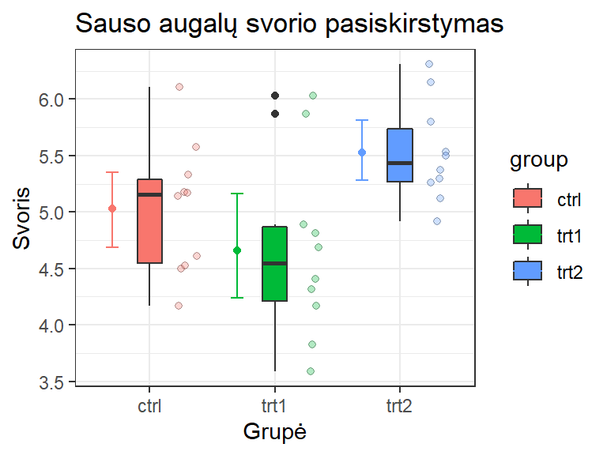
Funkcija gg_boxplot_plus() nubraižo grafiką, kuriame pažymėtas vidurkis su savirankos metodu apskaičiuotu pasikliauties intervalu, stačiakampė diagrama ir x ašyje pasklaidyti (vengiama persidengimo) duomenų taškai.
Grupes galima išdėlioti pagal grupių medianos dydį:
biostat::gg_boxplot_plus(weight ~ group, data = PlantGrowth,
sort_groups = "ascending", sort_fun = median)
## Warning: Some components of ... were not used: fun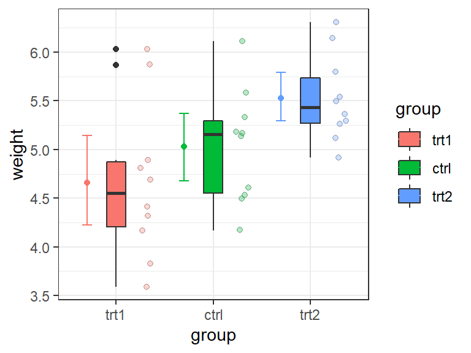
19.2.9 Dispersijų homogeniškumo tikrinimas
Lygių dispersijų prielaida (dar vadinama dispersijų homogeniškumu ar homoskedastiškumu), kai grupių yra dvi ar daugiau, gali būti tikrinama Levene’o (Livyno) / Brown-Forsythe kriterijais (pirmu atveju centras – vidurkis, antru – mediana). Šiais kriterijais tikrinamos hipotezės:
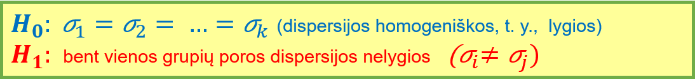
Kriterijaus taikymas programiškai:
car::leveneTest(weight ~ group, data = PlantGrowth)
## Levene's Test for Homogeneity of Variance (center = median)
## Df F value Pr(>F)
## group 2 1.1192 0.3412
## 27Levene’o / Brown-Forsythe kriterijaus rezultatų lentelėje labiausiai mus dominantis dalykas yra p reikšmė. Ji pateikta stulpelyje Pr(>F) ir yra lygi 0.34 (suapvalinta). Šis rezultatas rodo, kad skirtumas tarp dispersijų nėra statistiškai reikšmingas.

Pav. 19.4: Levene ir Brown-Forsythe testai naudojant R Commander.
Daugiau informacijos apie kriterijus dispersijų homogeniškumui tikrinti pateikta skyriuje 17.1.
19.2.10 Tinkamo ANOVA varianto ar analogo pasirinkimas
Ši tema nagrinėjama 19.1.1 skyriuje.
19.2.11 Kompaktiškas raidinis žymėjimas (cld)
Sakykime, kelias grupes lyginame poromis. Statistiškai reikšmingus rezultatus tarp grupių, kai lyginimų daug, galime pažymėti taip vadinamu kompaktišku raidiniu žymėjimu (angl., compact letter display, cld). Šio žymėjimo esmė: kiekvienai grupei suteikiama viena ar keletas raidžių. Interpretacija: su pasirinktu pasikliovimo lygmeniu \(\alpha\) galime teigti, kad tarp grupių, kurios neturi bendros raidės, skirtumai yra statistiškai reikšmingi. Jei grupės turi bendrą raidę – skirtumai statistiškai nereikšmingi. Raidinis žymėjimas labai patogus, kai vienu metu poromis lyginame daug grupių.
| group | cld | spaced_cld |
|---|---|---|
| ctrl | ab | ab |
| trt1 | a | a_ |
| trt2 | b | _b |
Lentelėje 19.1 rodoma, kad statistiškai reikšmingi skirtumai tik tarp grupių trt1 ir trt2, nes jos neturi bendros raidės.
Pažymėjimą cld būdu galima atidėti grafikuose. Paketo biostat funkcija tai gali padaryti automatiškai:
rez_tukey <- biostat::posthoc_anova(weight ~ group, data = PlantGrowth,
method = "Tukey")
cld_tukey <- biostat::make_cld(rez_tukey)
# Įdedame „cld“ objektą
biostat::gg_boxplot_plus(weight ~ group, data = PlantGrowth,
cld = cld_tukey)
19.2.12 Rezultatų aprašymas
Aprašant ANOVA arba Welch ANOVA (Welch F kriterijaus) rezultatus įprasta nurodyti visų grupių vidurkius. Jei grupių daug – vidurkiai nurodomi lentele. Aprašant neparametrinio Kruskal-Wallis kriterijaus rezultatus nurodomos visų grupių medianos. Taip pat nurodomas kriterijaus pavadinimas, kriterijaus statistika, parametrai ir p reikšmė.
ANOVA rezultatai
Taip pat pateikiamas taikytos analizės pavadinimas, kriterijaus statistika F, abu jos laisvės laipsniai (tiek skaitiklio, angl. numerator, tiek vardiklio, angl. denominator) ir p reikšmė 3-4 skaičių po kablelio tikslumu. Pvz., skyrelio 19.4.1 rezultatai:
## Df Sum Sq Mean Sq F value Pr(>F)
## group 2 3.766 1.8832 4.846 0.0159 *
## Residuals 27 10.492 0.3886
## ---
## Signif. codes: 0 '***' 0.001 '**' 0.01 '*' 0.05 '.' 0.1 ' ' 1Stulpelyje Df pateikti laisvės laipsniai, F value – F statistika, Pr(>F) – p reikšmė. Šių rezultatų aprašymo pavyzdys: „Skirtumai tarp grupių vidurkių buvo statistiškai reikšmingi (ANOVA, F(2, 27) = 4.846, p = 0.0159). Grupių vidurkiai pateikti lentelėje /nurodome lentelės numerį/“. Papildomai reiktų nurodyti grupių vidurkius ir, geriausia, pateikti grafiką su grupių palyginimu.
Welch ANOVA rezultatai
Welch ANOVA rezultatų pavyzdys ir 19.3.2 skyrelio:
##
## One-way analysis of means (not assuming equal variances)
##
## data: fscore and fcategory
## F = 90.59, num df = 2.000, denom df = 25.563, p-value =
## 0.000000000002494Čia F – F statistika, num df – skaitiklio laisvės laipsniai, denom df – vardiklio laisvės laipsniai, p-value – p reikšmė. Tad analizės rezultatai turėtų būti apibūdinti taip: „(Welch F kriterijus, F(2, 25.563) = 90.59, p < 0.0001)“.
Kruskal-Wallis analizės rezultatai
Aprašant neparametrinio Kruskal-Wallis kriterijaus rezultatus pateikiamas kriterijaus pavadinimas, kriterijaus statistika \(\chi^2\), jos laisvės laipsniai bei p reikšmė bent 3 skaičių po kablelio tikslumu. Jei p reikšmė labai maža, tai ją rašome maždaug taip p<0.001 ar p<0.0001. Pvz., skyrelio 19.6.1 rezultatai, kuriuos programa R atspausdino taip:
##
## Kruskal-Wallis rank sum test
##
## data: Ozone by Month
## Kruskal-Wallis chi-squared = 29.267, df = 4, p-value = 0.000006901Aprašymas turėtų atrodyti maždaug taip: „Skirtumai tarp grupių buvo statistiškai reikšmingi (Kruskal-Wallis kriterijus, \(\chi^2(4)\) = 29.27, p < 0.0001). Grupių pasiskirstymas vaizduojamas grafike /nurodome grafiko numerį/, skaitinės suvestinės pateiktos lentelėje /nurodome lentelės numerį/“. Reikšmė chi-squared nurodo \(\chi^2\) statistiką, df – parametrą pavadinimu „laisvės laipsniai“, p-value – p reikšmę. Papildomai turėtų būti pateiktos visų grupių medianos ir, geriausia, grafikai.
Post-hoc analizės rezultatai
Jei atlikta post-hoc analizė, jos rezultatai taip pat aprašomi ir tai daroma panašiai kaip ir t ar Wilcoxon kriterijų aprašymo atvejais. Tiksliai apibūdinamas ir analizės metodas, ir p reikšmių korekcijos metodas (jei jis taikytas). Nurodom, kurių būtent porų lyginimo rezultatas pateikiamas. Jei rezultatų daug – jie gali būti pateikiami lentele. Rekomenduoju naudoti cld žymėjimus (skyrelis 19.2.11) ir paaiškinti, ką tie žymėjimai reiškia.
19.3 Programos kodai analizei
Pateikti analizę atliekančių programos kodų pavyzdžiai. Juose esančius kodo elementus
y ~ group, data = my_datareikia pakeisti tinkamais savo duomenims:
my_data– duomenų lentelės pavadinimas (be kabučių);y– skaitinio kintamojo iš šios lentelės pavadinimas (be kabučių);group– kategorinio kintamojo iš šios lentelės pavadinimas (be kabučių).
Sakykime, jei jūs tiriate ląstelių skaičiaus pasiskirstymą (kintamasis skaičius) ląsteles augindami skirtingose terpėse (kintamasis terpė), o duomenys įrašyti duomenų lentelėje ląstelės, tada vietoje
y ~ group, data = my_data turite rašyti
skaičius ~ terpė, data = ląstelės19.3.1 ANOVA
Pavyzdyje pateiktus kodo elementus y ~ group, data = my_data reikia pakeisti tinkamais savo duomenims.
# Analizė
model_anova <- aov(y ~ group, data = my_data)
model_anova_summary <- summary(model_anova)
# Rezultatų spausdinimas
print(model_anova_summary)19.3.2 Welch ANOVA (Welch F kriterijus)
Pavyzdyje pateiktus kodo elementus y ~ group, data = my_data reikia pakeisti tinkamais savo duomenims.
# Analizė
model_welch_anova <- oneway.test(y ~ group, data = my_data)
# Rezultatų spausdinimas
print(model_welch_anova)19.3.3 Kruskal-Wallis kriterijus
Pavyzdyje pateiktus kodo elementus y ~ group, data = my_data reikia pakeisti tinkamais savo duomenims.
# Analizė
model_kw_test <- kruskal.test(y ~ group, data = my_data)
# Rezultatų spausdinimas
print(model_kw_test)19.3.4 Post-hoc: Tukey HSD kriterijus
Pavyzdyje pateiktus kodo elementus y ~ group, data = my_data reikia pakeisti tinkamais savo duomenims.
# Paketai
library(biostat)
# Analizė
model_tukey <- posthoc_anova(y ~ group, data = my_data,
method = "Tukey")
# Rezultatų apibendrinimas „cld“ žymėjimais
cld_tukey <- make_cld(model_tukey)
# Rezultatų spausdinimas
print(model_tukey)
print(cld_tukey)
# Grafikas su „cld“ žymėjimais
gg_boxplot_plus(y ~ group, data = my_data,
cld = cld_tukey)19.3.5 Post-hoc: Games-Howell kriterijus
Pavyzdyje pateiktus kodo elementus y ~ group, data = my_data reikia pakeisti tinkamais savo duomenims.
# Paketai
library(biostat)
# Analizė
model_gh <- posthoc_anova(y ~ group, data = my_data,
method = "Games-Howell")
# Rezultatų apibendrinimas „cld“ žymėjimais
cld_gh <- make_cld(model_gh)
# Rezultatų spausdinimas
print(model_gh)
print(cld_gh)
# Grafikas su „cld“ žymėjimais
gg_boxplot_plus(y ~ group, data = my_data,
cld = cld_gh)19.3.6 Post-hoc: Conover-Iman kriterijus
Pavyzdyje pateiktus kodo elementus y ~ group, data = my_data reikia pakeisti tinkamais savo duomenims.
# Paketai
library(biostat)
library(PMCMR)
# Analizė
model_conover_iman <- posthoc.kruskal.conover.test(y ~ group, data = my_data)
# Rezultatų apibendrinimas „cld“ žymėjimais
cld_conover_iman <- make_cld(model_conover_iman)
# Rezultatų spausdinimas
print(model_conover_iman)
print(cld_conover_iman)
# Grafikas su „cld“ žymėjimais
gg_boxplot_plus(y ~ group, data = my_data,
cld = cld_conover_iman)19.4 Pavyzdys 1: kai duomenys normalieji ir dispersijos lygios
19.4.1 ANOVA (pagrindinė analizė)
Pavyzdys:
library(tidyverse)
data(PlantGrowth)
?PlantGrowthglimpse(PlantGrowth)
## Observations: 30
## Variables: 2
## $ weight <dbl> 4.17, 5.58, 5.18, 6.11, 4.50, 4.61, 5.17, 4.53, 5.33, 5...
## $ group <fct> ctrl, ctrl, ctrl, ctrl, ctrl, ctrl, ctrl, ctrl, ctrl, c...head(PlantGrowth)
## weight group
## 1 4.17 ctrl
## 2 5.58 ctrl
## 3 5.18 ctrl
## 4 6.11 ctrl
## 5 4.50 ctrl
## 6 4.61 ctrlsummary(PlantGrowth)
## weight group
## Min. :3.590 ctrl:10
## 1st Qu.:4.550 trt1:10
## Median :5.155 trt2:10
## Mean :5.073
## 3rd Qu.:5.530
## Max. :6.310boxplot(weight ~ group, data = PlantGrowth)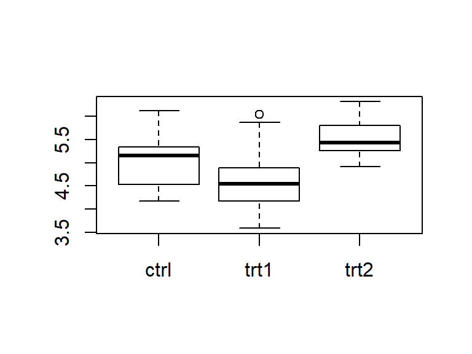
Normalumo prielaidos tikrinimas. Tam geriausia naudoti kelis metodus:
biostat::qq_plot(weight ~ group, data = PlantGrowth,
use_colors = TRUE)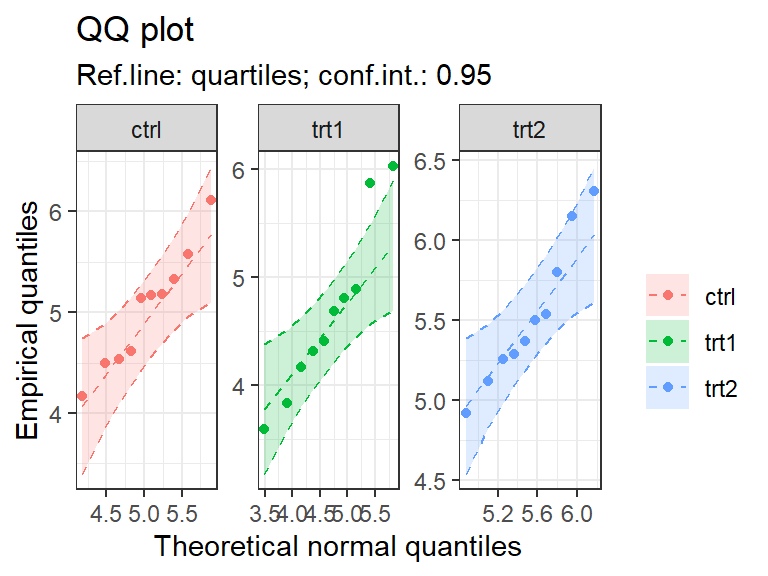
biostat::test_normality(weight ~ group, data = PlantGrowth)
##
## The results of Shapiro-Wilk normality test
##
## group statistic p.value
## 1 ctrl 0.957 0.747
## 2 trt1 0.930 0.452
## 3 trt2 0.941 0.564
##
## *** - p < 0.001, ** - p < 0.01, * - p < 0.05, . - p < 0.1Pagal qq diagramą grupėje „trt1“ yra keli nedaug nukrypę taškai. Bet pagal Shapiro-Wilk kriterijų nuokrypis nėra statistiškai reikšmingas. Tad, atrodo, normalumo prielaida tenkinama.
Dispersijų homogeniškumo prielaidos tikrinimas:
car::leveneTest(weight ~ group, data = PlantGrowth)
## Levene's Test for Homogeneity of Variance (center = median)
## Df F value Pr(>F)
## group 2 1.1192 0.3412
## 27Brown-Forsythe kirterijaus (Levene kriterijus, kai centras – mediana) rezultatai lygių dispersijų prielaidai neprieštarauja (p reikšmė \(Pr(>F) = 0.34 \ge \alpha = 0.05\)).
ANOVA analizė:
anova_modelis <- aov(weight ~ group, data = PlantGrowth)
summary(anova_modelis)
## Df Sum Sq Mean Sq F value Pr(>F)
## group 2 3.766 1.8832 4.846 0.0159 *
## Residuals 27 10.492 0.3886
## ---
## Signif. codes: 0 '***' 0.001 '**' 0.01 '*' 0.05 '.' 0.1 ' ' 1ANOVA rodo, kad bent viena grupė nuo kitų statistiškai reikšmingai skiriasi \(p = 0.0159<0.05\) (šie ANOVA rezultatai aprašyti skyriuje 19.2.12). Todėl verta atlikti porinius lyginimus.
19.4.2 Tukey kriterijus (post-hoc analizė)
Jei duomenys normalieji, imčių dispersijos yra lygios, ir visų lyginamų grupių dydžiai (daugmaž) vienodi, Tukey HSD kriterijus yra tinkamas naudoti kaip ANOVA post-hoc analizė, kurios metu atliekami poriniai palyginimai.
rez_tukey <- biostat::posthoc_anova(weight ~ group, data = PlantGrowth,
method = "Tukey")
rez_tukey
## Tukey HSD test results (ANOVA post-hoc)
##
## groups difference ci_lower ci_upper t df p
## 1 trt1-ctrl -0.371 -1.062 0.320 1.33 27.00 0.391
## 2 trt2-ctrl 0.494 -0.197 1.185 1.77 27.00 0.198
## 3 trt2-trt1 0.865 0.174 1.556 3.10 27.00 0.012 *
##
## group n mean variance sd cld spaced_cld
## 1 ctrl 10 5.032 0.340 0.583 ab ab
## 2 trt1 10 4.661 0.630 0.794 a a_
## 3 trt2 10 5.526 0.196 0.443 b _bSvarbiausi rezultatai:
groups – lyginamos grupės;
difference– skirtumai tarp vidurkių (pagal jį galime spręsti apie praktinę naudą);ci_lower,ci_upper– skirtumo pasikliautinasis intervalas;t– testo statistika;df– parametras;p– p reikšmė;cld– kompaktiškas raidinis žymėjimas.
Kompaktiškas raidinis žymėjimas (cld) atidedamas grafike:
library(ggplot2)
cld_tukey <- biostat::make_cld(rez_tukey)
biostat::gg_boxplot_plus(weight ~ group, data = PlantGrowth,
cld = cld_tukey,
sort_groups = "ascending",
sort_fun = mean) +
labs(title = "Svorio pasiskirstymas grupėmis",
subtitle = "Grupės išdėstytos vidurkių didėjimo tvarka",
x = "Grupė",
y = "Svoris",
# Spalvų legendos pavadinimas
fill = "Grupė",
color = "Grupė")
## Warning: Some components of ... were not used: fun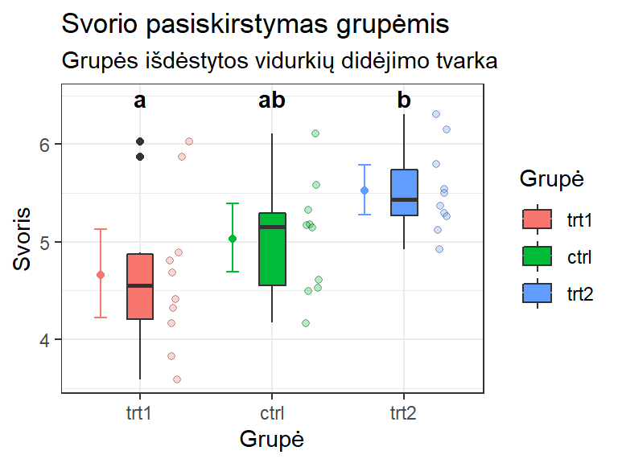
Su pasirinktu reikšmingumo lygmeniu \(\alpha\), tarp grupių, kurios pažymėtos ta pačia raide, skirtumai nėra statistiškai patikimi. T. y. trt1 ir trt2 skiriasi statistiškai reikšmingai, o visi kiti skirtumai – nereikšmingi.
19.5 Pavyzdys 2: kai duomenys normalieji, bet dispersijos nėra lygios
19.5.1 Welch ANOVA (pagrindinė analizė)
Pavyzdys:
library(tidyverse)
data(Moore, package = "carData")
?Mooreglimpse(Moore)
## Observations: 45
## Variables: 4
## $ partner.status <fct> low, low, low, low, low, low, low, low, low, lo...
## $ conformity <int> 8, 4, 8, 7, 10, 6, 12, 4, 13, 12, 4, 13, 7, 9, ...
## $ fcategory <fct> low, high, high, low, low, low, medium, medium,...
## $ fscore <int> 37, 57, 65, 20, 36, 18, 51, 44, 31, 36, 42, 56,...head(Moore)
## partner.status conformity fcategory fscore
## 1 low 8 low 37
## 2 low 4 high 57
## 3 low 8 high 65
## 4 low 7 low 20
## 5 low 10 low 36
## 6 low 6 low 18Atliekame tik mus dominančių kintamųjų suvestinę:
Moore %>%
select(fscore, fcategory) %>%
summary()
## fscore fcategory
## Min. :15.00 high :15
## 1st Qu.:35.00 low :15
## Median :43.00 medium:15
## Mean :43.11
## 3rd Qu.:55.00
## Max. :68.00biostat::gg_boxplot_plus(fscore ~ fcategory, data = Moore)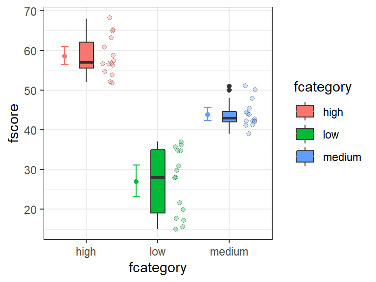
Iš grafiko galime matyti, kad grupių vidurkiai skiriasi, bet jų dispersijos nėra lygios, nes dėžutės skirtingo dydžio.
Tikrinam normalumo prielaidą. Tam geriausia naudoti kelis metodus:
biostat::test_normality(fscore ~ fcategory, data = Moore)
##
## The results of Shapiro-Wilk normality test
##
## fcategory statistic p.value
## 1 high 0.932 0.293
## 2 low 0.884 0.055 .
## 3 medium 0.890 0.067 .
##
## *** - p < 0.001, ** - p < 0.01, * - p < 0.05, . - p < 0.1biostat::qq_plot(fscore ~ fcategory, data = Moore)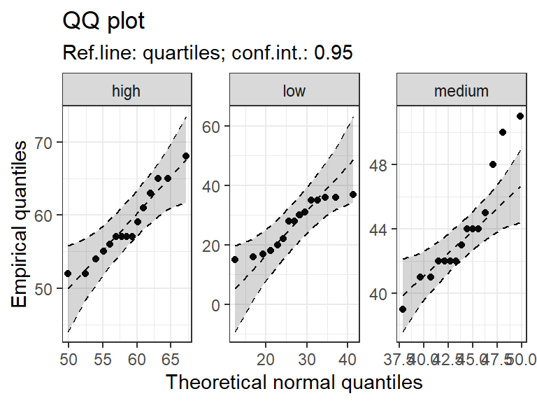 Duomenys normalumo prielaidą tenkina, nors yra ir ne visiško normalumo požymių.
Tikrinam dispersijų homogeniškumo (t. y., lygių dispersijų) prielaidą:
car::leveneTest(fscore ~ fcategory, data = Moore)
## Levene's Test for Homogeneity of Variance (center = median)
## Df F value Pr(>F)
## group 2 6.9845 0.002406 **
## 42
## ---
## Signif. codes: 0 '***' 0.001 '**' 0.01 '*' 0.05 '.' 0.1 ' ' 1Lygių dispersijų prielaida aiškiai pažeista \(p = 0.002406<0.05\)
Welch ANOVA analizė:
oneway.test(fscore ~ fcategory, data = Moore)
##
## One-way analysis of means (not assuming equal variances)
##
## data: fscore and fcategory
## F = 90.59, num df = 2.000, denom df = 25.563, p-value =
## 0.000000000002494Rezultatas – statistiškai reikšmingas skirtumas (\(p = 2.5 \cdot10^{-12} < \alpha =0.05\)). Todėl verta atlikti post-hoc analizę.
19.5.2 Games-Howell kriterijus (post-hoc analizė)
Jei imčių dispersijos nėra lygios, bet duomenys yra daugmaž normalieji, Games-Howell kriterijus yra tinkamas atlikti Welch ANOVA post-hoc analizę (porinius palyginimus).
rez_games_howell <- biostat::posthoc_anova(fscore ~ fcategory, data = Moore,
method = "Games-Howell")
rez_games_howell
## Games-Howell test results (ANOVA post-hoc)
##
## groups difference ci_lower ci_upper t df p
## 1 low-high -31.600 -37.763 -25.437 12.85 22.85 <0.001 ***
## 2 medium-high -14.667 -18.493 -10.841 9.55 24.99 <0.001 ***
## 3 medium-low 16.933 11.115 22.752 7.40 18.69 <0.001 ***
##
## group n mean variance sd cld spaced_cld
## 1 high 15 58.533 23.838 4.882 a a__
## 2 low 15 26.933 66.924 8.181 b _b_
## 3 medium 15 43.867 11.552 3.399 c __cSvarbiausių rezultatų aprašymas pateiktas skyriuje 19.4.2. Matome, kad tarp visų grupių skirtumai yra statistiškai reikšmingi.
Kompaktiškas raidinis žymėjimas (cld) atidedamas grafike:
library(ggplot2)
cld_gh <- biostat::make_cld(rez_games_howell)
biostat::gg_boxplot_plus(fscore ~ fcategory, data = Moore,
cld = cld_gh,
sort_groups = "ascending") +
labs(title = "Grupių palyginimo grafikas",
subtitle = "Grupės išdėstytos medianų didėjimo tvarka")
## Warning: Some components of ... were not used: fun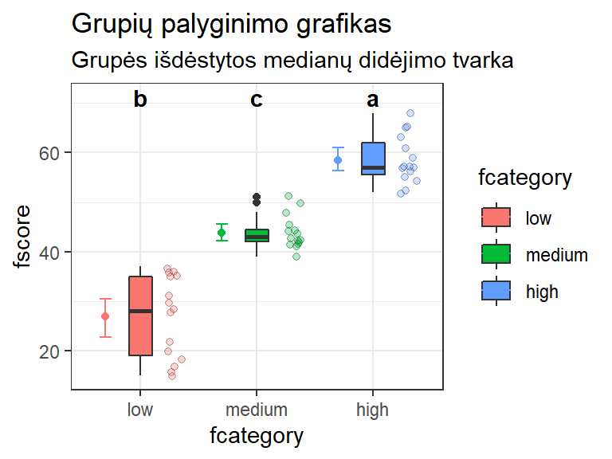
Kiekvienai lyginamai grupei priskirtos cld žymėjimo raidės skirtingos, vadinasi – skirtumai tarp visų lygintų grupių yra statistiškai reikšmingi.
19.6 Pavyzdys 3: neparametrinis kriterijus 2 ir daugiau grupėms lyginti
19.6.1 Kruskal-Wallis kriterijus (pagrindinė analizė)
Kruskal-Wallis kriterijus – tai neparametrinis ANOVA analogas, skirtas ranginiams arba normalumo kriterijaus netenkinantiems duomenims lygini. Į šį kriterijų taip pat galima žiūrėti kaip į apibendrintą Mann-Whitney-Wilcoxon kriterijaus variantą, kai imčių daugiau negu dvi.
Pavyzdys:
data(airquality)
head(airquality)
## Ozone Solar.R Wind Temp Month Day
## 1 41 190 7.4 67 5 1
## 2 36 118 8.0 72 5 2
## 3 12 149 12.6 74 5 3
## 4 18 313 11.5 62 5 4
## 5 NA NA 14.3 56 5 5
## 6 28 NA 14.9 66 5 6biostat::gg_boxplot_plus(Ozone ~ factor(Month), data = airquality, add_mean_ci = FALSE)
## Warning: Removed 37 rows containing non-finite values (stat_boxplot).
## Warning: Removed 37 rows containing missing values (geom_point).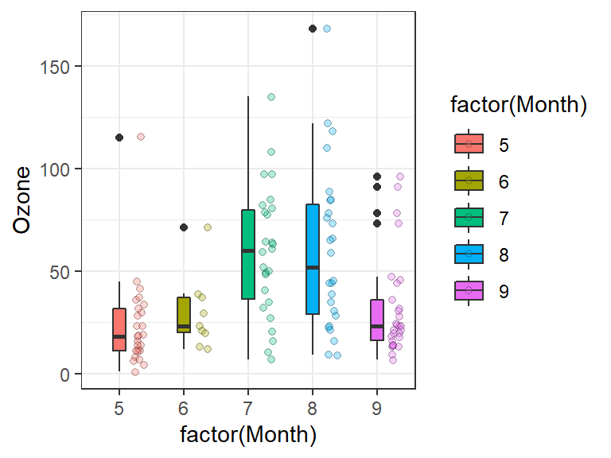 Pašalinome vidurkių pasikliautinuosius intervalus (add_mean_ci = FALSE), nes analizė, kurią naudosime, nelygina vidurkių.
kruskal.test(Ozone ~ Month, data = airquality)
##
## Kruskal-Wallis rank sum test
##
## data: Ozone by Month
## Kruskal-Wallis chi-squared = 29.267, df = 4, p-value = 0.000006901Skirtumas yra statistiškai reikšmingas (bent viena grupė skiriasi nuo kitų), nes \(p = 6.9\cdot10^{-6} < 0.05\). Šie Kruskal-Wallis kriterijaus taikymo rezultatai aprašyti skyriuje 19.2.12.
Atliekame post-hoc analizę.
19.6.2 Conover-Iman kriterijus (post-hoc analizė)
Conover-Iman kriterijus naudojamas atlikti Kurskal-Wallis kriterijaus post-hoc analizę (porinius palyginimus).
Conover-Iman kriterijų galima taikyti tada ir tik tada, kai Kurskal-Wallis kriterijaus taikymo rezultatai yra statistiškai reikšmingi.
library(PMCMR)
rez_conover <- posthoc.kruskal.conover.test(Ozone ~ Month, data = airquality)
## Warning in posthoc.kruskal.conover.test.default(c(41L, 36L, 12L, 18L,
## 28L, : Ties are present. Quantiles were corrected for ties.
rez_conover
##
## Pairwise comparisons using Conover's-test for multiple
## comparisons of independent samples
##
## data: Ozone by Month
##
## 5 6 7 8
## 6 0.8843 - - -
## 7 0.000019 0.0721 - -
## 8 0.000067 0.1109 1.0000 -
## 9 0.5424 1.0000 0.0031 0.0084
##
## P value adjustment method: holmRezultatų apibendrinimas kompaktišku žymėjimu.
cld_conover <- biostat::make_cld(rez_conover)
cld_conover
## group cld spaced_cld
## 1 5 a a_
## 2 6 ab ab
## 3 7 b _b
## 4 8 b _b
## 5 9 a a_Kompaktiškas raidinis žymėjimas (cld) gali būti pateiktas grafike.
biostat::gg_boxplot_plus(Ozone ~ factor(Month), data = airquality,
cld = cld_conover,
cld_color = "blue",
add_mean_ci = FALSE)
## Warning: Removed 37 rows containing non-finite values (stat_boxplot).
## Warning: Removed 37 rows containing missing values (geom_point).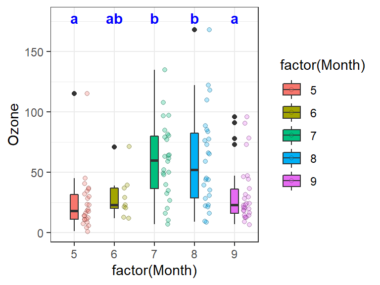
19.7 Video pavyzdys
Šio pavyzdžio analizė skirta atsakyti į klausimą, ar skirtingų organų vėžiu sergančių žmonių išgyvenimo trukmė skiriasi. Duomenis galite atsisiųsti iš čia: duomenys .
Preliminarus video epizodo siužetas:
- Susiformuojame klausimą, į kurį norime atsakyti.
- Duomenys jau yra parsiųsti ir įkelti į aplanką su RStudio projektu. Atsidarome projektą ir patikriname, ar jis tinkamai sukonfigūruotas. Atsidarome Rcmdr (reikalinga RcmdrPlugin.biostat versija 0.0.17 arba naujesnė).
- Įsikeliame duomenis iš reikiamo Excel bylos lapo ir apžiūrime juos. Duomenyse yra viena visiškai tuščia eilutė (vien tik
NAreikšmės). - Pašaliname tuščią eilutę.
- Duomenys nepriklausomi (nes kiekvienoje grupėje vis kiti pacientai), bet pateikti plačiuoju formatu, todėl pasiverčiame į ilgąjį.
- Išgyvenamumo trukmė pateikta dienomis. Ją pasiversime į metus padalindami iš 365 dienų metams.
- Nusibraižome duomenis, atliekame skaitinę suvestinę.
- Duomenų mažai, grupės skirtingo dydžio, duomenų pasiskirstymas nėra idealiai normalusis, todėl analizei pasirinktas neparametrinis Kruskal-Wallis (KW) kriterijus. Jis vykdomas nukopijuojant kodą iš pratybų tinklapio ir jį pritaikant savo reikmėms.
- KW analizės rezultatas rodo, kad yra statistiškai reikšmingas skirtumas bent tarp dviejų grupių, todėl atliekame porinius lyginimus nukopijuodami reikiamos post-hoc analizės kodą ir jį pakeisdami.
- Aprašome rezultatus (aprašymo pavyzdys pateiktas po video epizodu).
Rezultatų aprašymas galėtų būti daugmaž toks:
„Tirta žmonių, sergančių bronchų, krutų, kiaušidžių, skrandžio, žarnų vėžiu, išgyvenimo trukmė. Atlikus statistinę analizę paaiškėjo, kad ši trukmė sergant skirtingų organų vėžiu statistiškai reikšmingai skiriasi (Kruskal-Wallis kriterijus, \(\chi^2\)(4) = 14.95, p = 0.005). Poriniai lyginimai (Conover-Iman post-hoc kriterijus su Holm korekcija p reikšmėms) atskleidė, kad statistiškai reikšmingai skiriasi krutų ir bronchų (p = 0.006) bei krutų ir skrandžio (p = 0.014) vėžiu sergančių pacientų išgyvenamumo trukmė. Abiem paminėtais atvejais sergantys krutų vėžiu išgyveno ilgiau (lentelė … bei pav. …).“
(Porinių lyginimų p reikšmės paimtos iš lentelės-matricos, kurią sugeneravo Conover-Iman analizę vykdančios funkcijos).